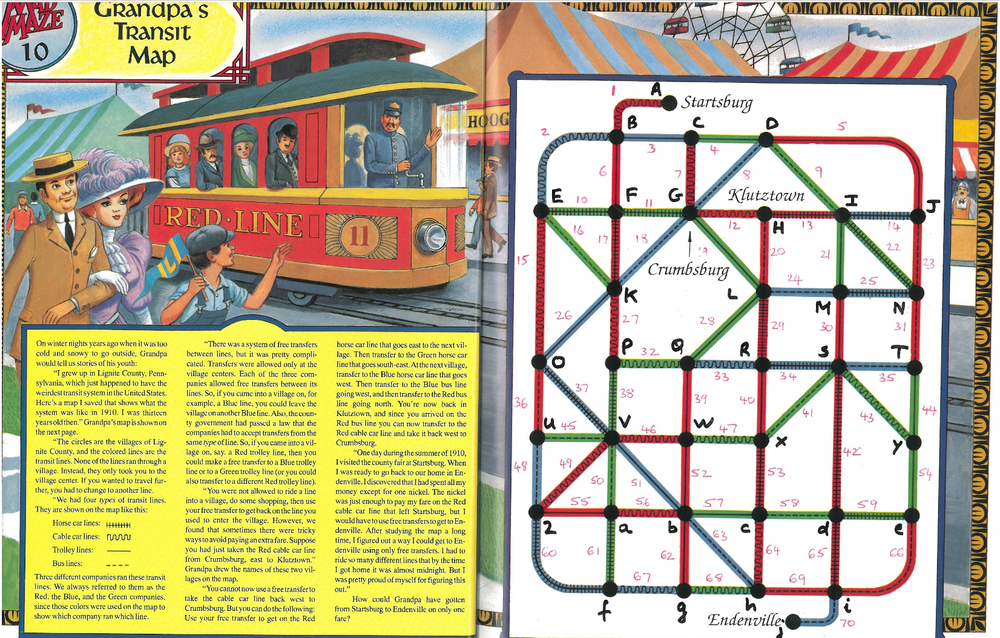

back
O Mapa de Transporte Púplico do Vovô
A fonte do quebra-cabeças.

Para a minha solução, empreguei um algoritmo de busca em profundidade.
Você pode conferir o código
aqui.
O diagrama de arvore da busca.
E uma animação P5.js da solução: